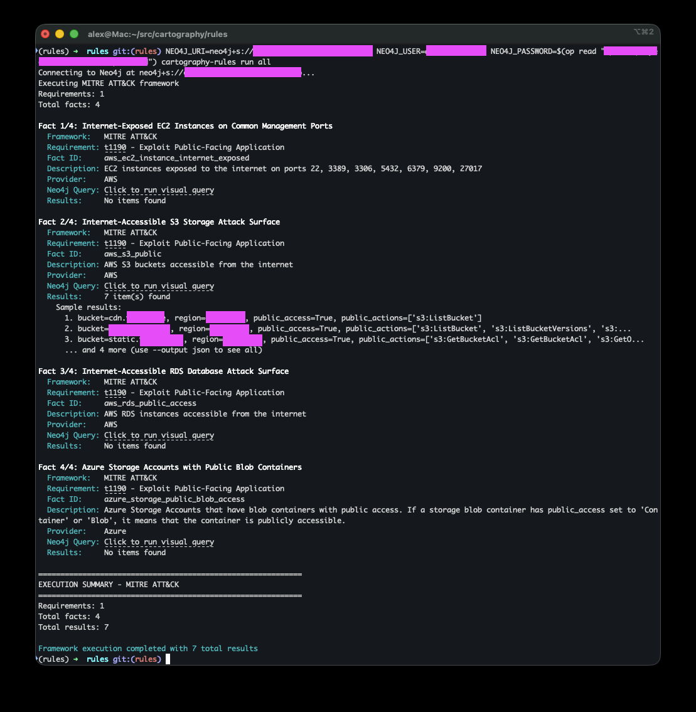
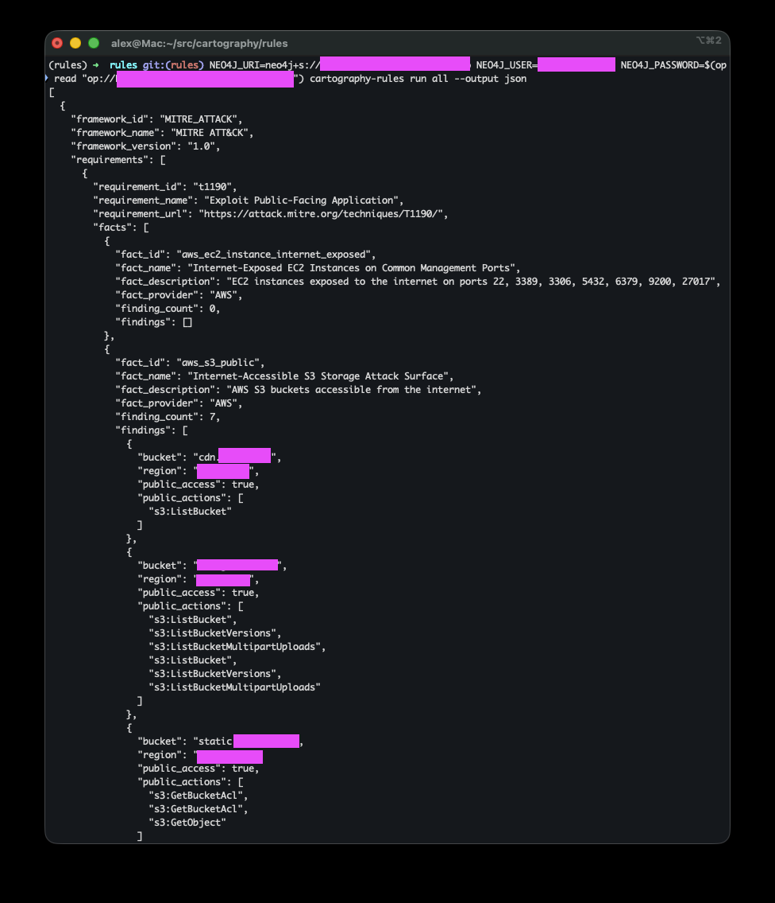

Cartography Rules#
Cartography Rules is a security query library for your Cartography graph.
With the cartography-rules CLI, you can:
Run pre-defined security queries across your infrastructure
Identify potential attack surfaces and security gaps
Explore and contribute community rules
Build custom queries for your own environment
Quick start#
The prerequisite is a reachable Neo4j database that Cartography has already populated. Rules query that graph directly; they do not require an input file and do not write data.
Configure the connection if it differs from the local defaults:
export NEO4J_URI=bolt://localhost:7687
export NEO4J_USER=neo4j
export NEO4J_DATABASE=neo4j
If Neo4j was started with NEO4J_AUTH=none, no password configuration is
needed. Then list, inspect, and run a rule:
cartography-rules list
cartography-rules list object_storage_public
cartography-rules run object_storage_public
For an authenticated Neo4j server, set the default password environment variable before running the same commands:
set +o history
export NEO4J_PASSWORD='your-password'
set -o history
cartography-rules run object_storage_public
Alternatively, keep the password in a custom environment variable or request an explicit interactive prompt:
cartography-rules run object_storage_public --neo4j-password-env-var MY_NEO4J_PASSWORD
cartography-rules run object_storage_public --neo4j-password-prompt
If a named password variable is missing or empty, the command exits with an actionable error instead of prompting. A typical text result reports each fact and finishes with totals such as:
EXECUTION SUMMARY
Total facts: 2
Total findings: 3
Rule execution completed with 3 total findings
Text output is intended for interactive review and includes sample findings.
Use --output json for complete, machine-readable results:
cartography-rules run object_storage_public --output json
Architecture#
The rules system uses a simple two-level hierarchy:
Rule (e.g., mfa-missing, object_storage_public)
└─ Fact (e.g., aws_s3_public, missing-mfa-ontology)
Rules represent security issues or attack surfaces you want to detect (e.g., “Public Object Storage exposed on internet”).
Facts are individual Cypher queries that gather evidence about your environment across different cloud providers and services.
This flat structure makes it easy to understand, maintain, and extend the rules library.
Design Philosophy#
These rules are designed from an attacker’s perspective. We ask: “What does an attacker actually need to exploit this weakness or gain access?”
The queries surface opportunities across the entire attack lifecycle: initial access, lateral movement, privilege escalation, data exfiltration, and persistence.
We don’t impose arbitrary thresholds like “no more than 5 admins” because every organization has different risk tolerances. Instead, we surface facts:
If a query returns no findings, you’ve eliminated obvious attack paths
If it returns findings, you now have a clear list of potential attacker targets and security gaps
Rationale#
Security isn’t one-size-fits-all. For example:
An EC2 security group open to the internet may be risky for some orgs even if it isn’t attached to an instance (someone could attach one later). For other orgs, that’s irrelevant noise.
IAM roles trusted across multiple accounts or S3 buckets with public access may or may not be material risks depending on your use case.
User accounts without MFA might be acceptable in development environments but critical in production.
Our goal is to surface facts in context so you can decide what matters for your environment.
You can list all available rules and their details from the CLI, see below.
Note
Rules query against the existing Cartography graph. They don’t write data; they return results you can view in text, JSON, or the Neo4j Browser.
Rules Lifecycle#
Rule Versioning#
Each rule has a semantic version number (e.g., 0.1.0, 1.0.0) that helps track changes over time:
Major version (X.0.0): Breaking changes - query structure significantly altered, findings format changed
Minor version (0.X.0): Additive changes - new facts added, expanded coverage to additional providers
Patch version (0.0.X): Bug fixes - query improvements, description updates
Example lifecycle:
0.1.0 → Initial release with AWS support
0.2.0 → Added Azure and GCP facts
0.2.1 → Fixed query performance issue
1.0.0 → Promoted to stable, all facts tested in production
When a rule’s version changes, you can review the changes in the git history to understand what was modified and assess impact on your existing workflows.
Fact Maturity Levels#
Each fact has a maturity level that indicates its stability and production-readiness:
EXPERIMENTAL#
Use case: New facts, recently added, or covering new security patterns
Stability: May have bugs, query performance not optimized, output format may change
Testing: Limited production testing
What to expect:
False positives/negatives possible
Query might be slow on large graphs
Results format may evolve
When to use: Early adopters, testing new detection capabilities, non-critical analysis
Example:
_new_attack_surface = Fact(
id="aws_new_vulnerability_check",
name="New AWS Vulnerability Pattern",
description="Recently discovered attack pattern",
cypher_query="...", # must RETURN the affected node's id AS id
cypher_visual_query="...",
cypher_count_query="...",
asset_label="AWSEC2Instance", # Neo4j label of the affected node
asset_id_field="id", # output field holding that node's .id
identity_fields=("id",),
module=Module.AWS,
maturity=Maturity.EXPERIMENTAL, # New, needs testing
)
STABLE#
Use case: Production-ready facts with proven accuracy
Stability: Well-tested, optimized queries, consistent results
Testing: Extensively tested across multiple environments
What to expect:
Reliable results with minimal false positives
Good query performance
Stable output format
When to use: Production security monitoring, compliance reporting, automated alerting
Example:
_proven_check = Fact(
id="aws_s3_public",
name="Internet-Accessible S3 Storage Attack Surface",
description="AWS S3 buckets accessible from the internet",
cypher_query="...", # must RETURN the affected node's id AS id
cypher_visual_query="...",
cypher_count_query="...",
asset_label="AWSS3Bucket", # Neo4j label of the affected node
asset_id_field="id", # output field holding that node's .id
identity_fields=("id",),
module=Module.AWS,
maturity=Maturity.STABLE, # Battle-tested in production
)
Filtering by Maturity#
You can exclude experimental facts from your analysis:
# Only run stable facts
cartography-rules run object_storage_public --no-experimental
# Run all (including experimental) - default behavior
cartography-rules run object_storage_public
Typical Fact Lifecycle#
Initial Development (
EXPERIMENTAL)New fact created to detect a security issue
Basic testing in development environment
Community feedback gathered
Refinement (
EXPERIMENTAL)Query optimization based on performance testing
False positive reduction
Documentation improvements
Tested across diverse environments
Promotion (
STABLE)Proven accuracy across multiple production deployments
Query performance optimized
Output format finalized
Comprehensive test coverage
Maintenance (
STABLE)Bug fixes as needed
Query updates to handle new Cartography schema changes
Description clarifications
Version and Maturity Together#
Rules evolve over time. Here’s how versioning and maturity work together:
# Version 0.1.0 - Initial release
object_storage_public = Rule(
id="object_storage_public",
name="Public Object Storage Attack Surface",
description="Publicly accessible object storage services such as AWS S3 buckets and Azure Storage Blob Containers",
tags=("infrastructure", "attack_surface"),
output_model=ObjectStoragePublic,
facts=(
_aws_s3_public, # EXPERIMENTAL - new query
),
version="0.1.0",
)
# Version 0.2.0 - Added Azure support
object_storage_public = Rule(
id="object_storage_public",
name="Public Object Storage Attack Surface",
description="Publicly accessible object storage services such as AWS S3 buckets and Azure Storage Blob Containers",
tags=("infrastructure", "attack_surface"),
output_model=ObjectStoragePublic,
facts=(
_aws_s3_public, # EXPERIMENTAL
_azure_storage_public, # EXPERIMENTAL - newly added
),
version="0.2.0",
)
# Version 0.2.1 - Bug fix
# AWS query fixed, no version bump for facts themselves
# Version 1.0.0 - Production ready
object_storage_public = Rule(
id="object_storage_public",
name="Public Object Storage Attack Surface",
description="Publicly accessible object storage services such as AWS S3 buckets and Azure Storage Blob Containers",
tags=("infrastructure", "attack_surface"),
output_model=ObjectStoragePublic,
facts=(
_aws_s3_public, # STABLE - promoted after extensive testing
_azure_storage_public, # STABLE - promoted after extensive testing
),
version="1.0.0",
)
Usage#
Framework filtering#
You can filter rules by compliance framework short name, optional scope, and optional revision:
# List all NIST AI RMF-mapped rules
cartography-rules list --framework nist:ai-rmf
# Run all NIST AI RMF-mapped rules
cartography-rules run all --framework nist:ai-rmf
The short name alone matches every scope and revision of that framework, so
--framework cis covers all four CIS benchmarks. Available filters:
Filter |
Framework |
|---|---|
|
CIS AWS Foundations Benchmark |
|
CIS Google Cloud Platform Foundation Benchmark |
|
CIS Google Workspace Foundations Benchmark |
|
CIS Kubernetes Benchmark |
|
ISO/IEC 27001:2022 Annex A |
|
AICPA SOC 2 Trust Services Criteria |
|
NIST AI Risk Management Framework |
cartography-rules frameworks prints the live state: every scope, its revisions,
how many rules map to it, and each mapped control with its title.
list#
See all available rules#
cartography-rules list
Output shows all rules with their IDs, names, and fact counts:
Available rules:
- compute_instance_exposed (3 facts)
- database_instance_exposed (4 facts)
- mfa-missing (2 facts)
- object_storage_public (2 facts)
...
See details of a specific rule#
cartography-rules list mfa-missing
Output shows rule metadata and all associated facts:
Rule: mfa-missing
Name: User accounts missing MFA
Description: Detects user accounts without multi-factor authentication
Facts: 2
Version: 0.3.1
Facts:
1. missing-mfa-aws (AWS)
AWS IAM users that are not associated with any MFA device
Maturity: EXPERIMENTAL
2. missing-mfa-ontology (Cross-cloud)
Active UserAccount nodes whose `_ont_has_mfa` is explicitly false
Maturity: EXPERIMENTAL
See details of a specific fact#
cartography-rules list mfa-missing missing-mfa-ontology
run#
Run all rules in text mode#
cartography-rules run all
# or
cartography-rules run all --output text

Run all rules in JSON mode#
cartography-rules run all --output json

Run a specific rule#
cartography-rules run mfa-missing
Run a specific fact within a rule#
cartography-rules run object_storage_public aws_s3_public
Exclude experimental facts#
cartography-rules run object_storage_public --no-experimental
Authentication Options#
With no configured password, the CLI connects using Neo4j’s no-auth mode and
does not prompt. --neo4j-password-prompt is the only option that requests
interactive input.
Use the default password environment variable:#
export NEO4J_PASSWORD='your-password'
cartography-rules run mfa-missing
Use a custom environment variable for the password:#
cartography-rules run mfa-missing --neo4j-password-env-var MY_NEO4J_PASSWORD
Use interactive password prompt:#
cartography-rules run mfa-missing --neo4j-password-prompt
Tab completion#
Note that you can TAB complete. Install it with
cartography-rules --install-completion
and then restart your shell and then you can get TAB completion like:
cartography-rules list <TAB>
cartography-rules run <TAB>
This will show you all available rules and facts.
Contributing New Rules#
Want to add your own security rules? Here’s how:
Query Structure: cypher_query, cypher_visual_query, and cypher_count_query#
Each Fact requires three distinct Cypher queries:
cypher_query - Data Query#
Returns specific fields used to populate the output model. This query should:
Use explicit field selection with aliases (e.g.,
RETURN n.id AS id, n.name AS name)Return only the data fields needed for the rule’s output model
Be optimized for data extraction and processing
Example:
MATCH (m:CloudflareMember)
WHERE m.two_factor_authentication_enabled = false
RETURN m.id AS id, m.email AS email, m.firstname AS firstname
cypher_visual_query - Visualization Query#
Returns nodes and relationships for Neo4j Browser visualization. This query should:
Use
RETURN *or explicit node/relationship returns (e.g.,RETURN morRETURN *)Include relevant relationships and context for visual exploration
Help users understand the graph structure and connections
Example:
MATCH (m:CloudflareMember)
WHERE m.two_factor_authentication_enabled = false
RETURN m
Or with relationships:
MATCH (b:AWSS3Bucket)
WHERE b.anonymous_access = true
WITH b
OPTIONAL MATCH p=(b)-[:POLICY_STATEMENT]->(:AWSS3PolicyStatement)
RETURN *
cypher_count_query - Total Asset Count Query#
Returns the total count of assets of the type being evaluated by the Fact. This query should:
Count all assets of the relevant type, regardless of whether they match the Fact criteria
Return a single value with
RETURN COUNT(...) AS countEnable calculation of compliance ratios (e.g., “10 public buckets out of 100 total”)
Example:
MATCH (m:CloudflareMember)
RETURN COUNT(m) AS count
Or for S3 buckets:
MATCH (b:AWSS3Bucket)
RETURN COUNT(b) AS count
This count query allows users to understand the scope of their environment and calculate what percentage of assets are affected by a security finding.
General Query Guidelines#
Ensure your queries are efficient and optimized for performance on large graphs.
Test your queries against realistic datasets to minimize false positives/negatives.
Follow existing code style and conventions for consistency.
Output Models with Pydantic#
Each Rule must define an output model that extends Finding. This Pydantic model defines the structure of the data returned by the rule’s facts.
Creating an Output Model#
from cartography.rules.spec.model import Finding
class MyRuleOutput(Finding):
"""Output model for my custom rule."""
# Define the fields that will be populated from cypher_query results.
# Declare a human-readable label first: the first non-empty field is used as the finding title.
name: str | None = None # Resource name (used as the finding title)
id: str | None = None # Resource identifier
email: str | None = None # User email (if applicable)
region: str | None = None # Cloud region
public_access: bool | None = None # Access level
# Add any other fields relevant to your rule
Key Points#
Inherit from
Finding: Your model must extend the baseFindingclassUse Optional Fields: All fields should be optional (
| None = None) as different facts may return different subsets of dataMatch Query Aliases: Field names should match the aliases used in your
cypher_query(e.g., if query returnsn.id AS id, model should haveidfield)Automatic Handling:
The
sourcefield is automatically populated with the module name (e.g., “AWS”, “Azure”). It is reserved: your query must not return asourcecolumn. For the per-row ontology provider, return_ont_source AS ontology_sourceand declare that field instead.Fields not defined in the model are stored in the
extradictionaryNumber values are automatically coerced to strings
Lists, tuples, and sets are joined into comma-separated strings
Dictionaries are serialized to JSON strings
Example from object_storage_public#
class ObjectStoragePublic(Finding):
name: str | None = None
id: str | None = None
region: str | None = None
public_access: bool | None = None
account: str | None = None # For Azure storage accounts
object_storage_public = Rule(
id="object_storage_public",
name="Public Object Storage Attack Surface",
description="Publicly accessible object storage services",
output_model=ObjectStoragePublic, # Reference the output model class
facts=(...),
tags=("infrastructure", "attack_surface"),
version="0.1.0",
)
Finding identity vs. display fields#
Output-model fields are for display and context. Many of them change over time even though the
underlying finding does not: counts (active_key_count, super_admin_count, image_count), dates
and usage flags (days_since_rotation, last_used_date, is_stale_or_unused), and aggregate
lists. If a downstream system that tracks finding lifecycle (first-seen time, acceptance/suppression,
ownership, issue correlation) keys on those volatile fields, the same finding reappears as new every
time a metric moves.
To give such consumers a stable contract, every Fact must declare identity_fields: the
subset of output-model fields that form the stable logical identity of a finding across syncs.
The field is required (no default), so a fact that omits it fails to construct.
_aws_user_direct_policies = Fact(
id="aws_user_direct_policies",
...
asset_label="AWSUser", # Neo4j label of the affected node
asset_id_field="user_arn", # that node's .id + failing-count driver
identity_fields=("user_arn", "policy_arn"), # one finding per attachment
)
Guidelines:
Every field in
identity_fieldsmust exist on the rule’s output model and be returned by the fact’scypher_query.Fact.__post_init__and a unit test enforce this.An identity must be sufficient, not merely present: two rows of the same fact must never share one identity. The shape that breaks this is a query that fans out over a to-many hop while the identity omits the fan-out column, so one asset yields several findings with one identity. A consumer keying findings on
(rule.id, fact.id, identity)cannot represent that: it drops a finding or rejects the batch, and the rule silently reports nothing for the asset. Depending on what the extra rows mean, either fold the fan-out column intoidentity_fields(a GCP instance with an external IP on two NICs is two findings, so("instance_id", "external_ip")), or collapse the fan-out in the query with an aggregate (collect,min) orRETURN DISTINCTwhen the extra rows carry nothing new.tests/unit/rules/test_identity_uniqueness.pydetects this statically and names both fixes when it fails.Never key on a property the ingest path leaves nullable. An identity field built from a soft-mapped value (
"arn": f.get("Arn")) is null for every record the provider omits it on, so all of them collide on one empty identity. Prefer the property that backs the node’s ownid.Downstream lifecycle tracking should build its storage identity from
rule.id+fact.id+ theidentity_fieldsvalues, so multi-fact rules cannot collide.For shared ontology labels (
:UserAccount,:DeviceInstance,:Tenant, …) a node id is only unique per provider: two providers can have distinct nodes with the sameid. A cross-cloud fact that matches such a label must include a provider discriminator inidentity_fields, returning_ont_sourcefrom the query under a name of its own (... AS ontology_source) and declaring that field on the output model. Do not alias itsource: see the reserved fields below.sourceandextraare reserved: they belong to theFindingbase model and are populated byRule.parse_results(sourcefromfact.module,extrafrom undeclared columns). A query column of either name would silently overwrite the framework-supplied value, soFact.__post_init__rejects acypher_querythat aliases them.identity_fieldsis emitted per fact in thecartography-rules run --output jsonoutput (on each fact result, alongsidefact_id), so JSON consumers get the contract without importing the Python rule registry.Every fact must also declare an affected-node anchor:
asset_label(the Neo4j label of the node the finding is about) andasset_id_field(the output-model field holding that node’s.id). Both are required and, together, form an indexable(label, id)anchor so consumers can locate the offending node in the graph.asset_id_fieldmust exist on the output model and be returned by thecypher_query(... AS <name>);Fact.__post_init__and a unit test enforce this.The
cypher_querymust bind a variable to the label it declares (MATCH (k:APIKey) WHERE k:OpenAIApiKey OR k:OpenAIAdminApiKey ..., notMATCH (k) WHERE k:OpenAIApiKey ...) and must projectasset_id_fieldoff that same variable (k.id AS api_key_id). Both halves are needed: without the first, the rows a fact returns and the asset it claims can diverge; without the second, a query could match(u:AWSUser)and return anAWSRoleid, so the(label, id)pair would name no real node.Fact.__post_init__enforces both, and a unit test additionally checks thatasset_labelis a label some node schema actually writes.Only the final
RETURNproduces output columns. An alias introduced by an intermediateWITH x AS yis query state and does not satisfyasset_id_fieldoridentity_fields; conversely, aWITH x AS sourceis fine, since the reserved-name check also looks only at the final projection. A column may be named either by... AS <name>or by projecting a bare variable carried over from an earlierWITH.identity_fieldsis distinct fromasset_id_field.asset_id_fieldis the anchor id and drives the distinct-asset failing count shown in compliance metrics; it is not the lifecycle-identity contract. The two can differ on purpose:aws_user_direct_policiesanchors on and counts distinct users (asset_label="AWSUser",asset_id_field="user_arn") but treats each user/policy attachment as a separate finding (identity_fields=("user_arn", "policy_arn")).When the affected node has no single id column yet (e.g. a namespace-aggregated query), return one (
... AS namespace_id) and pointasset_id_fieldat it. When the node can be one of several labels, anchor on a shared umbrella label (AWSPrincipal,GCPPrincipal,EntraPrincipal,ScalewayPrincipal,APIKey, …) rather than guessing a single subtype.asset_labelandasset_id_fieldare emitted per fact in thecartography-rules run --output jsonoutput (alongsideidentity_fields), so JSON consumers get the anchor without importing the Python rule registry.
Display field order (finding title)#
The order in which fields are declared on the output model is a de-facto display contract.
Downstream consumers derive a finding’s title by taking the first non-empty rule-specific field
of the output model, in class declaration order. Declaration order is independent of
identity_fields, asset_label, and asset_id_field (those stay whatever the identity and anchor
contracts need) and of the cypher_query RETURN order (the model is keyed by alias name, not
position).
The base Finding class declares two inherited fields, source and extra, before any
rule-specific field, so model_fields / model_dump() lists them first. They are metadata, not
display fields: a title-deriving consumer must skip source and extra and start from the
first field declared on the rule’s own subclass. (The text runner’s sample output at
cartography/rules/runners.py prints every field for debugging and is not the title consumer.)
Guidelines:
Declare a human-readable label first: a name,
*_name,email, domain, or title. Avoid leading with an opaque id, ARN, URI, digest, region, or a boolean: those make the title an unreadable string instead of the resource a user recognizes.A scope-level name (project/account/org) is only a good title when the finding’s resource is that scope (e.g. a project-level or account-level check). For a resource inside a scope, lead with the resource’s own name, not the project/account name.
If the field would be empty for every finding, it cannot serve as the title even if declared first. For example a “missing CMEK key” check whose key field is null by definition: the consumer skips it and falls through to the next field.
If the node has no natural name, alias one in the
cypher_queryand declare it first rather than leading with an id. Common patterns:coalesce(n.friendly_name, n.short_id) AS namean AWS
Nametag:OPTIONAL MATCH (n)-[:TAGGED]->(t:AWSTag {key: 'Name'})thencoalesce(t.value, n.id) AS namea stable user-chosen identifier (e.g. an RDS DB instance identifier) is already human-readable and fine as the first field.
class DatabaseExposedOutput(Finding):
"""Output model for publicly exposed databases."""
name: str | None = None # human-readable label first: used as the finding title
id: str | None = None
region: str | None = None
Steps to add a new rule#
Create a new rule file in
cartography/rules/data/rules/:from cartography.rules.spec.model import Fact, Rule, Finding, Maturity, Module # Define facts with data, visualization, and count queries _my_aws_check = Fact( id="my_aws_security_check", name="My AWS Security Check", description="What this checks for", cypher_query=""" MATCH (n:SomeNode) WHERE <condition> RETURN n.id AS id, n.name AS name, n.region AS region """, cypher_visual_query=""" MATCH (n:SomeNode) WHERE <condition> RETURN n """, cypher_count_query=""" MATCH (n:SomeNode) RETURN COUNT(n) AS count """, asset_label="SomeNode", # Neo4j label of the affected node asset_id_field="id", # output field holding that node's .id (returned above) identity_fields=("id",), module=Module.AWS, maturity=Maturity.EXPERIMENTAL, ) _my_azure_check = Fact( id="my_azure_security_check", name="My Azure Security Check", description="What this checks for in Azure", cypher_query=""" MATCH (n:SomeAzureNode) WHERE <condition> RETURN n.id AS id, n.name AS name, n.location AS region """, cypher_visual_query=""" MATCH (n:SomeAzureNode) WHERE <condition> RETURN n """, cypher_count_query=""" MATCH (n:SomeAzureNode) RETURN COUNT(n) AS count """, asset_label="SomeAzureNode", # Neo4j label of the affected node asset_id_field="id", # output field holding that node's .id (returned above) identity_fields=("id",), module=Module.AZURE, maturity=Maturity.EXPERIMENTAL, ) # Define output model class MyRuleOutput(Finding): """Output model for my custom rule.""" name: str | None = None # human-readable label first: used as the finding title id: str | None = None region: str | None = None # Define rule my_rule = Rule( id="my-finding", name="My Security Rule", description="Detects a security issue", output_model=MyRuleOutput, facts=(_my_aws_check, _my_azure_check), tags=("category",), version="0.1.0", )
Register your rule in
cartography/rules/data/rules/__init__.py:from cartography.rules.data.rules.my_rule import my_rule RULES = { # ... existing rules my_rule.id: my_rule, }
Test it:
cartography-rules list my-rule cartography-rules run my-rule
Submit a PR - PRs welcome! ❤️
Next steps#
Explore the findings against your graph
Create custom findings for your environment-specific risks
Use JSON output (
--output json) to integrate with your existing security toolsContribute your findings back to the community via pull requests